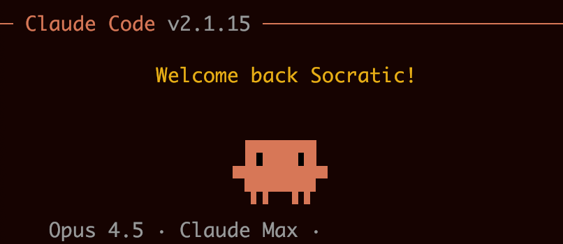

This page documents an interactive design workflow between a human and an AI agent, using Claude Code with Opus 4.5. Incremental progress is shown between each card, where the prompt that led to that version is displayed below the animation, followed by a summary of what the agent did.
This exercise demonstrates several insights about collaborative workflows with AI agents:
Constraints can limit creativity. In some cases, defining the specific method to use proved too restrictive and didn't result in the intended outcome or visual feeling. (See Version 3: "vague idea on typing animation with perlin noise")
Evocative language enables exploration. It often proved more productive to describe the intended feeling using varied vocabulary that could communicate the idea without over-specifying implementation. (See Version 8: "look like an octopus... quadropus")
Visual feedback bridges understanding. A powerful way to provide feedback was through screenshots, enabling the agent to see exactly what the human sees on the other side of the screen. (See Version 17: "See the screenshot I took")
Precise intent with flexible execution. Instructions that were simultaneously quite specific about the goal but somewhat vague about implementation were interpreted and executed accurately to the precise specification intended. (See Version 22: spacebar and function row alignment)
From the agent's perspective, this workflow highlighted the value of iterative refinement over upfront perfection. Each version built on the last, with human feedback steering direction while preserving creative latitude. The shift from rectangular legs to organic bezier tentacles (v7-v8) emerged not from explicit technical instruction, but from understanding the desired feeling—"quadropus"—and translating that into appropriate techniques.
The data-driven approach in v20 (using a keyMap hash) exemplifies how a well-timed structural suggestion from the human—"create a hash of all the keys"—can unlock cleaner solutions. Sometimes the best contributions aren't about doing more, but about reframing the problem.

Claudito is the name we gave to the Claude avatar—a pixelated, four-legged character that serves as a visual representation of the AI assistant. The goal of this exercise was to animate Claudito typing on a keyboard.